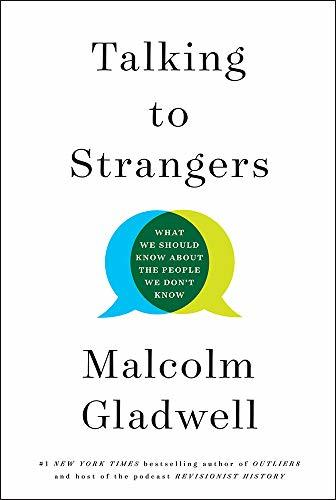

"Talking to Strangers: What We Should Know About the People We Don't Know"
- Read on 2020-11-25
- Rating: ️️️️️
- Format: üéß (8 hours 42 minutes)
Interesting, but somewhat inconclusive apart from "people are complicated." The book talked about "default to truth", "transparency", and "coupling" - three things I'm glad I know more about. It gave numerous examples of each to help illustrate them, and potentially how to either be aware of them, and maybe work with them. I've been duped. I wear my emotions on my sleeve. I'm a victim of my own impulses. I still wish the book were more conclusive.
- Prior: Edgedancer
- Next: Oathbringer